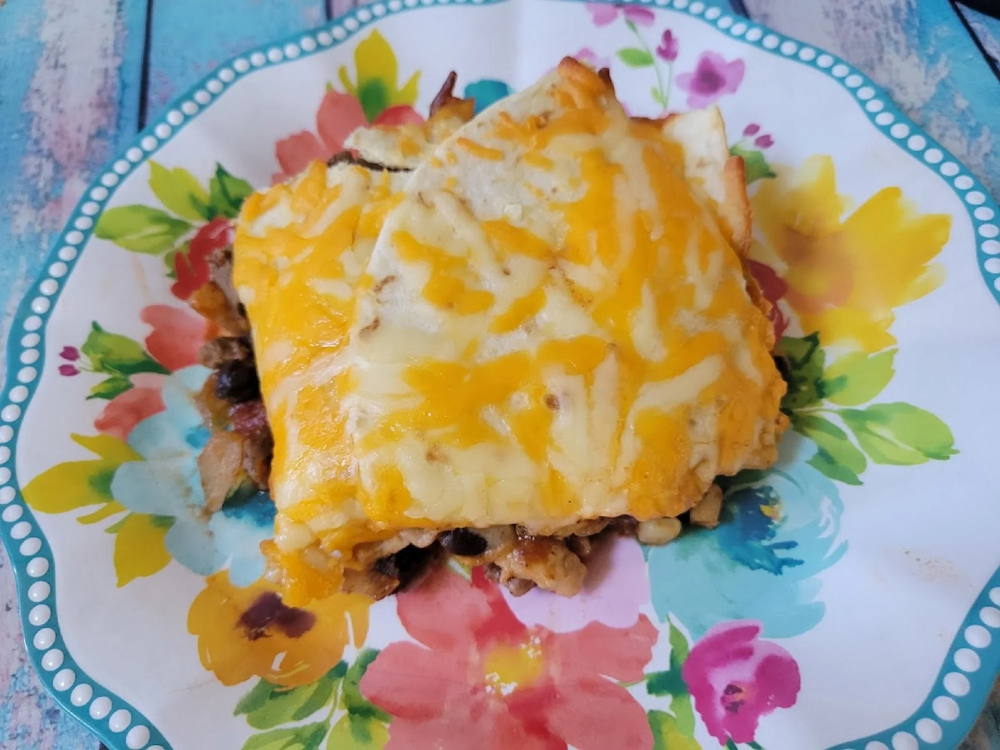

Mexican Chicken Taco

Description
This is flavorful way to deconstruct your tacos and make serving them up a little easier on you!
Serve tacos casserole-style, and top them with your favorite toppings - shredded lettuce, diced tomatoes,
salsa, sour cream, etc. as desired! Adjust the seasonings to your preference - you can start with less
than called for and add more if you're worried it will be too strong of a flavor profile.
Add your favorite taco toppings such as shredded lettuce, diced tomatoes, sour cream, salsa, etc. if desired to serve!
Ingredients
- nonstick coocking spray
- 1 tablespoon olive
- 1 pound ground chicken
- 1 medium onion, diced
- 2 teaspoons chili powder
- 2 teaspoons cumin
- 1 can black beans, drained
- 1 can tomato sauce
Steps
-
Preheat the oven to 350 degrees F (175 degrees C). Spray a 9x13-inch casserole dish with nonstick
cooking spray and set aside.
- Heat oil in a large nonstick skillet over medium to medium-high heat. Add ground chicken and onion.
Cook, stirring occasionally to break up the meat, until onion is mostly tender and meat is cooked through,
about 5 minutes. Season with chili powder, cumin, garlic powder, and salt. Add black beans, corn, tomatoes,
and tomato sauce; stir until well combined.
-
Bring mixture to a low simmer and cook for about 10 minutes. Taste mixture and adjust the seasonings as desired.
- Spoon a couple of good-sized scoops of meat mixture onto the bottom of the prepared casserole dish, and spread
into a thin layer. Lay about half of the tortillas over the sauce, breaking them in half as needed to make a
fairly even layer without too much overlap. Add remaining meat mixture over the tortilla layer. Top with
remaining tortillas, again breaking into pieces as necessary to evenly cover the surface.
-
Cover with shredded cheese. Spray a piece of foil with nonstick cooking spray, and set the sprayed side against
the cheese to cover the casserole dish (this helps prevent "cheese loss" when you remove the foil).
-
Bake in the preheated oven until casserole is bubbly and cheese is nicely melted, about 30 minutes. Allow to cool
for 10 to 15 minutes before cutting into wedges or scooping out to serve.